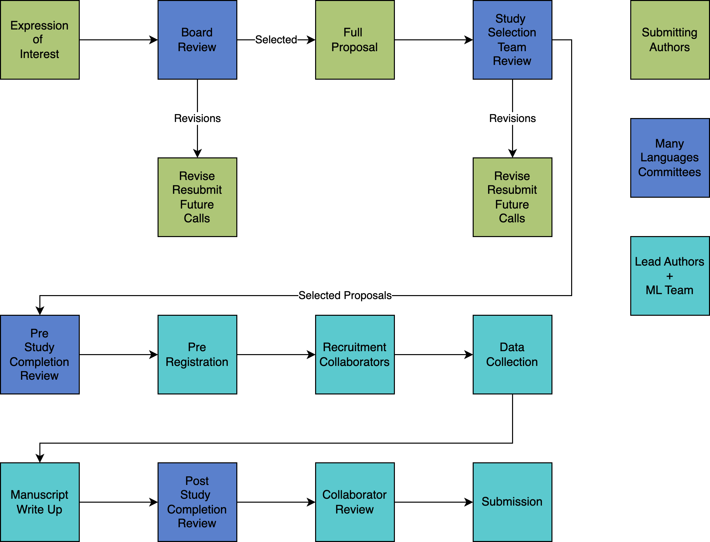

People Policies
Membership
All individuals are invited for membership in ManyLanguages. To be considered a member you must:
Follow the Code of Conduct.
Actively engage in the membership portal. This process includes:
Logging into the membership portal once the invitation has been received.
Maintaining an active email as your login for the portal. Accounts with emails that bounce will be removed.
Fill out the membership survey to assist in the formation of ad hoc committees. This survey will be used to help diversify those who are solicited to help with tasks.
You are not required to participate in any specific projects or leadership roles to be considered a member. Membership can be as simple as the desire to keep up with the community - however, this requires you log into the portal to receive updates.
Leadership
Number of members: The leadership team will consist of no less than five but no more than nine formal members.
Chair: One person will be appointed the chair of the leadership team. The chair will organize meetings, keep meeting notes, and relay information to the necessary personnel on project teams or committees. The chair position will be selected by the current leadership team every two years.
Position length: Leadership members’ terms are two years in length, with the possibility of renewal, given the current leadership and community approval. Leadership members may also resign their post at any time.
Selection: These members will be selected by the current leadership team and input from the overall community. A call for new members will be broadcast to the network, and members can apply for open positions. These applications will be presented to the network for general ranking based on personal statements. Once network input has been received, each applicant will be reviewed by the current leadership committee (including the outgoing member), and individual(s) will be selected to fulfill the role with an eye toward research, geographic, and other forms of diversity.
Role: The leadership team will meet at least monthly to discuss current goals, issues, projects, or other topics as needed as set by the current chair. They are responsible for the day-to-day organisation and maintenance of the network including updates to policies, convening ad hoc committees, troubleshooting issues brought by members, membership portal maintenance, and more.
Check out the current leadership on the about page.
Committees
Project Monitoring
The project monitoring (PM) committee will be composed of at least one person from each of the ManyLanguage projects. This person can be designated by the project lead team or appointed by the leadership team. The PM committee will meet monthly to discuss project status, timelines, goals, issues, and other discussions necessary to ensure timely and appropriately completed projects. The PM is generally responsible for relaying the project’s progress and for adhering to policies for ManyLanguages projects. Other PM tasks may include:
All lead team duties should be defined at the beginning of the project with coordination by the PM (i.e., who will answer emails? Who is in charge of data? etc.). These duties may change throughout the project but a clear definition will help PM and lead team members with role ambiguity.
Coordinating and attending meetings for the project they are working with.
Taking meeting notes, coordinating who will complete required tasks, and following up on those tasks.
Organising and maintaining CRediT information.
Ad Hoc Committees
Ad hoc committees will be formed when a specific directive or need arises within the community. Ad hoc committees are filled by first polling the membership for interest in joining the committee. If this process does not fill the number of persons necessary for that committee, the leadership team will reach out to individuals based on the membership survey to help find members for the roles. Specific ad hoc committees we expect include:
Code of conduct violation review: This committee will be tasked with reviewing code of conduct violations and following guidelines presented in that policy.
Study selection: This committee will organise the call for studies, coordinate the receipt of submissions for studies, solicit and coordinate the review of studies, send out the studies for network voting, and organise the information provided by the reviewers and network. The study selection committee will provide recommendations on the studies to the leadership team for selection.
Pre-study review: A study review team will be created before the study is launched to review all materials, policies, and other necessities that are in place before the network is notified of the study. They will ensure adherence to policies for studies (for example, posted preprint, preregistered plans, collaboration agreement, etc.). The pre-study review team will provide feedback and assistance in the potential ethics process.
Post-study review: When a study is completed (i.e., a manuscript will be sent for publication), a post-study review team will be created. This team will coordinate the posting of FAIR materials, data, and other outputs into the ManyLanguages format on our GitHub page. A team member will provide code/analysis-check to ensure reproducibility when appropriate. Given that individual studies may result in multiple manuscripts, this process will be repeated for each manuscript.
Please use this form to give feedback to the community about our policies, website, or any other thoughts.